You have 30 seconds to use the last letter of the starting or previous word to enter a word starting with the same letter. For example if the word is かに (crab), then you could enter にほんご as a possible entry.
 にほんご --> 合格">If the word is katakana, then it will not be accepted as hiragana; i.e. れすとらん will not be accepted.
Shiritori is a Japanese word game.
It’s similar to Scrabble in a manner of speaking -- you take a letter of the alphabet and think of another word starting with it.
It’s a wonderful educational game to stretch your brain and test your knowledge on Japanese vocabulary.
I couldn't easily find a simple version of this online for Japanese, so it was a great opportunity for a side-project; also serves as fantastic practice for web development!
Please reach out to hwanderlustdev@gmail.com for any inquiries.
You can also check out my GitHub profile at the bottom of the page in the footer.